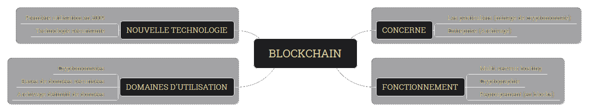

Comment ça marche ?
La blockchain est une technologie de stockage de données qui est connue pour sa transparence et sa sécurité.Son mode de fonctionnement est plutôt rudimentaire. Elle fonctionne comme un registre ouvert et disponible pour tous, sur lequel il est impossible de réécrire. On ne peut qu’ajouter au registre et non modifier son contenu. Ce registre géant qu’est la blockchain est alors partagé à des millions d’ordinateurs à travers le monde.
Ce registre est donc à la portée de tous, et tout le monde peut écrire des données que personne ne pourra altérer.
Tout le monde peut consulter et vérifier ces données.
Décentralisation oblige, les utilisateurs se sont mis à contribution pour valider les transactions.
On les appelle des « mineurs ». Mais comme tout travail mérite un salaire, il fallait que les utilisateurs soient rémunérés.
C’est en partie pour cette raison que le bitcoin a été créé. Les mineurs sont payés en bitcoin pour le décryptage de la blockchain effectué.
(D'après operation buisness)
